|
Présentation de l'interface graphique 1.Barre d'outils inférieure 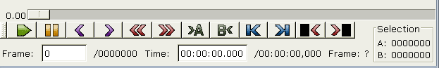 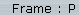 Type de l'image courante(I/B/P) 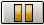 Cliquez pour suspendre puis reprendre la lecture Cliquez ici pour atteindre l'image I (Intra frame ou image clé) précédente. Cliquez ici pour atteindre l'image I suivante. 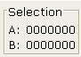 Cette zone indique l'emplacement des marqueurs A (début) et B (fin). Seule la plage [A,B[ sera enregistrée/traitée. Cliquez ici pour définir l'emplacement du marqueur A (voir Couper). Cliquez ici pour atteindre la première image Cliquez ici pour atteindre la dernière image Atteindre la prochaine image "noire" Cliquez ici pour atteindre la prochaine image noire, la notion d'image noire étant un peu subjective :) 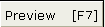 Cliquez ici pour ouvrir une fenêtre où s'affiche la sortie des filtres. Si vous naviguez dans la fenêtre principale, les changement se reflètent dans la fenêtre d'aperçu. Ce mode d'aperçu est terriblement lent. 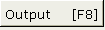 Lorsque ce bouton est enfoncé, la fenêtre principale affiche la sortie des filtres uniquement lors de la lecture. C'est une méthode d'affichage rapide qui vous permettra d'avoir des effets en temps réel dans la plupart des cas. 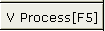 Lorsque ce bouton est enfoncé, la vidéo que vous enregistrerez aura été traitée (c'est-à-dire que les filtre et l'encodage lui auront été appliqués). Sinon, ce sera la copie directe de la source vidéo, sans modification. 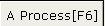 Le même principe appliqué à l'audio. 2.Barre d'outils supérieure 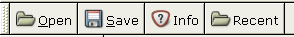 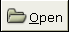 Ouvre un fichier 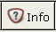 Affiche des informations sur la vidéo actuellement chargée (codec/longueur/...) 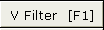 Ouvre la boîte de dialogue des filtres vidéo. Plus d'informations sur ces filtres ici 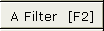 Ouvre la boîte de dialogue des filtres audio. Plus d'informations sur ces filtres here 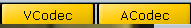 Permettent de sélecitonner les codecs audio et vidéo qui seront utilisés (uniquement en mode process) 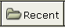 Accès rapide aux 5 derniers fichiers ouverts. |
 Cliquez une première fois pour lancer la lecture, une deuxième pour l'arrêter
Cliquez une première fois pour lancer la lecture, une deuxième pour l'arrêter
 Cliquez ici pour atteindre l'image précédente. Cela peut prendre plusieurs secondes s'il s'agit d'une image I.
Cliquez ici pour atteindre l'image précédente. Cela peut prendre plusieurs secondes s'il s'agit d'une image I.
 Cliquez ici pour atteindre l'image suivante.
Cliquez ici pour atteindre l'image suivante.
 Cliquez ici pour définir l'emplacement du marqueur B (voir
Cliquez ici pour définir l'emplacement du marqueur B (voir  Enregistre la vidéo
Enregistre la vidéo